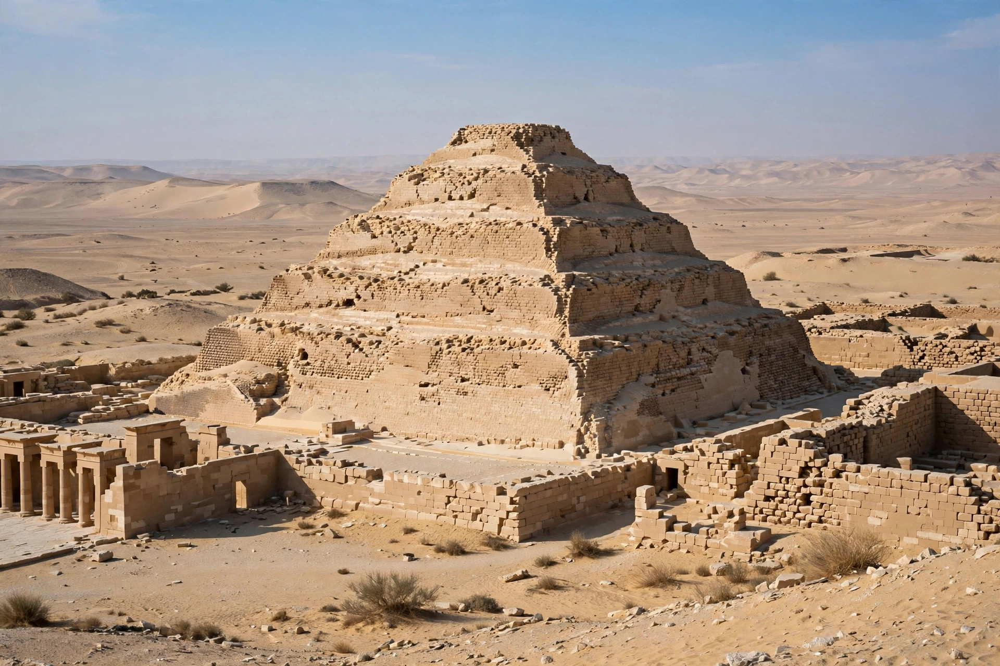

| Djoser | |
|---|---|
| Reign | c. 2670 BC (19 or 29 years) |
| Dynasty | Third Dynasty |
| Successor | Sekhemkhet |
| Burial | Step Pyramid, Saqqara |
| Horus name | Netjerikhet |
Djoser (also read as Zoser) was an ancient Egyptian pharaoh of the Third Dynasty during the Old Kingdom, and the founder of that dynasty. He is best known under his Horus name Netjerikhet. Djoser is renowned for commissioning the first Egyptian pyramid, the Step Pyramid at Saqqara, designed by his vizier Imhotep — the earliest colossal stone building in Egypt and a landmark in the development of monumental architecture.
Djoser succeeded his brother (or father) Khasekhemwy, the last king of the Second Dynasty. His reign, conventionally dated to around 2670 BC and given as 19 years by Manetho and 29 years in the Turin King List, saw military campaigns into the Sinai in search of turquoise and copper, the extension of Egyptian control toward Nubia, and the consolidation of the royal administration. The much later Famine Stela on Sehel Island, carved in the Ptolemaic period but set in Djoser's reign, credits him with ending a seven-year famine by appeasing the Nile god Khnum.
At Saqqara, Imhotep built Djoser's tomb first as a square mastaba, then enlarged it, and finally raised it into a six-stepped pyramid about 60 metres high, enclosed within a vast funerary complex of courtyards, chapels, and dummy buildings in stone imitating reed and timber architecture. The complex includes the Heb-Sed court, where the king's ritual rejuvenation festival could be celebrated in the afterlife, and a deep burial shaft descending some 28 metres to a granite burial chamber.
Djoser was venerated long after his death; in later tradition he and Imhotep were remembered together as sages, and the king appears in New Kingdom and Late Period literature as a byword for ancient wisdom.